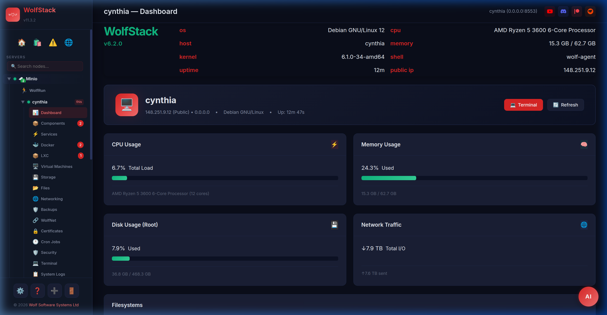

📊 WolfStack Overview
The universal server and workstation management platform
What is WolfStack?
WolfStack is an all-in-one server management platform that lets you monitor, manage, and control your entire infrastructure from a single beautiful web dashboard. Whether you have one machine or hundreds, WolfStack scales with you.
Built entirely in Rust for maximum performance and reliability, WolfStack installs on any Linux distribution and auto-adapts to your system. It comes with WolfNet — an encrypted mesh network that connects all your servers automatically, even across different data centres.

Key Capabilities
- Real-time monitoring — CPU, memory, disk, and network metrics with interactive graphs
- Container management — Create, clone, migrate, and manage Docker and LXC containers
- Multi-server clustering — Manage your entire fleet from one dashboard
- Proxmox integration — Install on top of Proxmox to manage VE clusters
- WolfRun orchestration — Schedule and scale containers across nodes, replacing Kubernetes
- File & config management — Browse and edit files on any node via the web UI
- Web terminal — Full SSH terminal in your browser for any node or container
- App Store — Deploy containers and apps to any node with one click
- Issues Scanner — AI-powered proactive monitoring for hardware and service issues
- Alerting — Discord, Slack, and Telegram notifications for threshold breaches
- AI Agent — Ask questions about your infrastructure in natural language
- Beautiful themes — Dark, Glass, Midnight, Amber Terminal, and more
⚡ Quick Start
Step 1: Install WolfStack
Run this on every machine you want to manage:
curl -sSL https://raw.githubusercontent.com/wolfsoftwaresystemsltd/WolfStack/master/setup.sh | sudo bashThe installer automatically detects your Linux distribution and installs WolfStack as a systemd service.
Step 2: Get the Token
After installation, each server displays its cluster token. You can also retrieve it with:
wolfstack --show-tokenStep 3: Open the Web UI
Navigate to http://your-server-ip:8553 and log in with your Linux credentials. You
only need to connect to one server — it manages the rest.
Step 4: Add Your Other Nodes
Click the + button in the sidebar to add each server using its token. You can add both WolfStack and Proxmox nodes.
Step 5: Connect WolfNet
Go into your cluster settings and click 🔗 Update WolfNet Connections to automatically set up encrypted peer-to-peer networking between all your nodes.
That's it! You now have a fully managed, encrypted cluster. 🐺
System Requirements
Supported Platforms
- Debian 11, 12, 13 (Trixie)
- Ubuntu 20.04, 22.04, 24.04, 25.04, 25.10
- AlmaLinux 8, 9
- Rocky Linux 8, 9
- Fedora 38+
- Arch Linux
- Proxmox VE 7, 8
- Any Linux with glibc 2.31+
Minimum Requirements
- CPU: 1 core (any architecture supported by Rust)
- RAM: 256 MB free
- Disk: 50 MB for the binary
- Network: One open port (8553 default)
Dashboard Features
Datacenter View
The datacenter view shows a global map of your infrastructure with real-time status for every node. At a glance, see CPU usage, memory consumption, disk space, and uptime for your entire fleet.
Node Detail
Click any node to see detailed metrics including interactive CPU, memory, disk, and network graphs. View running services, manage containers, browse files, and open a web terminal — all from one page.
Themes

WolfStack includes multiple beautiful themes including WolfStack Dark, Midnight, Glass (glassmorphism), Amber Terminal, and more. Switch themes from the Settings page.
What's Included
WolfStack comes with a suite of integrated tools:
- Container Management — Docker & LXC with cloning, migration, and resource limits
- Storage Manager — S3/R2, NFS, WolfDisk mounts from the dashboard
- File Manager — Browse, edit, upload, and download files on any node
- Networking — IP management, port forwarding, firewall rules
- Multi-Server Clustering — Join nodes into clusters with auto-discovery
- MariaDB/MySQL Editor — Browse tables, run queries, manage databases
- Security — Linux PAM authentication, API tokens, audit logging
- Certificates — SSL/TLS certificate management
- Cron Jobs — Schedule and manage cron tasks on any node
- Terminal — Full web-based SSH terminal
- Issues Scanner — AI-powered server health monitoring
- Alerting — Discord, Slack, Telegram notifications
- WolfRun Orchestration — Schedule, scale, and manage services across your cluster — replaces Kubernetes
- Proxmox Integration — Install on Proxmox to manage VE clusters from the WolfStack dashboard
- App Store — One-click container deployment
- AI Agent — Natural language infrastructure queries
- Settings — Themes, alerting, Docker registries, node and cluster configuration